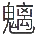

~~~~~~~~~~~~~~~~~~~~~~~~~~~~~~~~~~~~~~~~~~~~~~~~~~~~~~~~~~~~~~~~~~~~~~~~~~~~~~~~~~~~~~~~~~~~~~~~~~~~~~~~~~~~~~~~~~~~~~~~~~~~~~~~~~~~~~~~~~~~~~~~~~~~~~~~~~
测试边框
编辑凡例
一代二百数十年间。遗闻轶事。上自宫围。下逮闾里。或者于名人记载。或述于故老传言。
考清史者往往欢其散失。未易徵稽。本编力为採辑。分类编辑。巨细无遗。本末俱备。可为
有清一代野史之总汇。因名曰清朝野史大观。
一本编分为五类。名有意旨。请述其略。
︵一︶清代文字。左则波浪。右则波浪。左空心句。右空心句。䚽于寓言。本编悉力钩稽。考
核实录。是为清宫遗闻。
︵二︶巨獄大案。左则竖线。右则竖线。遂无直笔。本编旁徵博引。华见真情。内政外交。并
陈详是为清史料。
︵三︶名臣名将。右实心句。右实心句。剧盗巨猾。本编穷源竞委。并蓄兼收。公论彰彰。用
昭懲劝是为清人逸事。
︵四︶名儒文苑。左则顿号。右则顿号。流布艺林。本编据携刺取。乃据其华。詹詹小言。乐
然頣解。是为清朝艺苑。
︵五︶虞初之志。梼杌之言。怪诞离奇。更亦难数。本编撷採维严。宁缺无滥。既富于趣。益
编辑凡例test
一